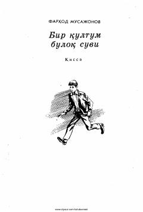

BQMaktab o'quvchilari o'rtasidagi murakkab munosabatlar va xarakterlar to'qnashuvi haqidagi qissa.
Ushbu qissada maktab o'quvchilari o'rtasidagi munosabatlar, o'zaro tushunmovchiliklar va xarakterlar to'qnashuvi tasvirlangan. Asar qahramonlari Sanjar va Rixsivoy o'rtasidagi ziddiyatlar orqali yoshlikdagi g'urur, do'stlik va insoniy fazilatlar tahlil qilinadi.